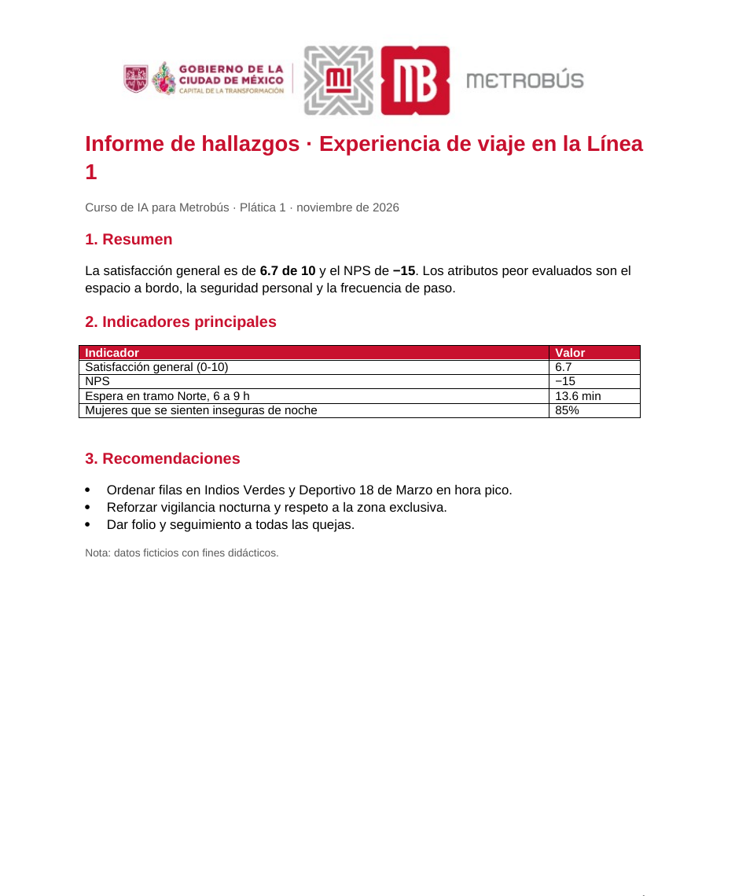

Herramientas de investigación cuantitativa y cualitativa con IA
Carlos Ricardo Cruz Mendoza, DCC, IIMAS, UNAM
Material de la plática
Escanea el código con tu celular
carlosricardocm.github.io/
platicas/platicasmetrobus/platica1
- Esta presentación interactiva
- Datos de los ejercicios (encuesta, comentarios y entrevistas)
- Resultados de referencia para comparar
- Skill del documento institucional
Todos los datos son ficticios.
IA de tareas vs. IA generativa
IA de tareas
Un modelo especializado por tarea
- Entrada: video, sensores, tablas
- Salida: un número, una etiqueta, una alerta
- Se entrena con muchos datos etiquetados
- Se mide con exactitud: ¿acertó o no?
- Corre en cámaras, equipos pequeños o en sitio
Ejemplos: conteo de personas, predicción de demanda y lectura de placas (un detector YOLO entrenado con imágenes etiquetadas en Label Studio, más un OCR como EasyOCR o Tesseract).
IA generativa (LLM)
Un modelo general basado en lenguaje
- Entrada: instrucciones en lenguaje natural (prompt)
- Salida: texto, imágenes, audio, código
- Se adapta con el prompt, sin reentrenar
- Difícil de medir: puede “alucinar”
- Corre en GPU grandes o como servicio en la nube
Ejemplos: redactar, resumir, responder preguntas, agentes y todo lo que veremos en esta plática.
No compiten, se combinan: la cámara detecta placas y lee su texto (IA de tareas) y el LLM redacta el reporte para el operador (IA generativa).
En esta plática usaremos la IA generativa para el análisis cuantitativo y cualitativo.
Investigación cuantitativa y cualitativa
Parte cuantitativa
Mide con números.
Responde: ¿Cuánto? ¿Dónde? ¿A quiénes afecta más?
Produce: promedios, porcentajes, comparaciones y pruebas estadísticas. Centrado en números, estadísticas, patrones matemáticos y predicciones.
Parte cualitativa
Comprende con palabras.
Responde: ¿Por qué pasa? ¿Cómo lo viven las personas?
Produce: temas, citas textuales y explicaciones. Centrado en texto, audio, video, significados, temas y sentimientos.
Herramientas de IA
Para la parte cuantitativa
Asistentes que analizan archivos
Claude, ChatGPT, Gemini, Deepseek, Qwen: limpian datos, visualizan, calculan y grafican datos.
Jupyter Notebook
Análisis estadístico mediante código.
Julius AI
Análisis de datos para visualizaciones, gráficos y resúmenes. Puedes subir un archivo (Excel, CSV, base de datos) y pedirle cosas en lenguaje natural como: "Haz una regresión lineal entre estas dos variables" o "Genera un gráfico de dispersión con tendencia"
Para la parte cualitativa
NotebookLM
Preguntar a tus documentos con citas a la fuente utilizando lenguaje natural.
ATLAS.ti y MAXQDA
Codificación de entrevistas y comentarios
Transcripción
Whisper
RAG (Generación aumentada por recuperación)
Técnica avanzada: búsqueda personalizada en tus textos/audios/videos que son pasados a la IA para su procesamiento.
En esta plática usaremos Claude Cowork para las dos partes. Un solo agente analiza la encuesta, codifica comentarios y entrevistas, se conecta a Google Drive (MCP) y usa skills para dar un resumen utilizando un formato institucional.
Claude Cowork
Un agente de IA no solo contesta preguntas: le das un objetivo, arma un plan, ejecuta los pasos con tus archivos y aplicaciones, revisa su trabajo y te pide aprobación antes de actuar. Cowork es ese agente dentro de Claude Desktop.
Carpeta
Lee y crea archivos (Excel, Word, PDF) solo en la carpeta que le conectas.
Conectores (MCP)
MCP es un estándar abierto que conecta a Claude con otras aplicaciones. Hoy: Gmail y Drive.
Skills
Carpetas con instrucciones y archivos que Claude reutiliza, como un manual de procedimientos.
Modo Manual
Claude pide tu aprobación antes de cada acción. La persona decide.
Regla: Claude propone, la persona verifica.
Conector, skill y plugin: ¿en qué se diferencian?
Conector (MCP)
Con qué se conecta
Da acceso a otra aplicación para leer o actuar en ella.
Se parece a: una llave de acceso a otra oficina.
En el curso: leer y guardar en Google Drive; leer quejas y dejar borradores en Gmail.
Skill
Cómo lo hace
Instrucciones y archivos que Claude reutiliza para hacer una tarea siempre igual.
Se parece a: un manual de procedimientos.
En el curso: documento-institucional-metrobus, con logos, colores y pie de página.
Plugin
Todo junto en un paquete
Un paquete instalable que reúne skills, conectores y comandos para un área o puesto.
Se parece a: una caja de herramientas armada para un equipo.
En el curso: un plugin “Metrobús” podría reunir el skill institucional y los conectores de Gmail y Drive para instalarlos de una vez.
Juntos: el conector da acceso, el skill enseña el procedimiento y el plugin empaqueta ambos para compartirlos con todo un equipo.
Cómo pedirle bien a la IA
1 · Contexto
Quién eres, para qué es y quién lo leerá.
2 · Tarea
Qué debe hacer, con un verbo claro.
3 · Datos
Qué archivo, qué hoja y qué columnas.
4 · Formato
Tabla, Excel, Word, gráfica o resumen breve.
5 · Control
Que diga cuántos casos usó y cómo calculó.
Pedido vago
“Analiza la encuesta.”
Claude tiene que adivinar qué te importa, con qué datos y en qué formato.
PEDIDO CLARO
Soy analista de Metrobús y preparo una nota para la dirección. Con Encuesta_limpia.xlsx compara la espera promedio por tramo en el pico de la mañana. Dame una tabla y una gráfica de barras, dime cuántos casos hay en cada tramo y explica cómo calculaste el promedio.
Caso de uso: Análisis cualitativo y cuantitativo de la encuesta de satisfacción percibida por usuarios del Metrobús
1
Limpiar la encuesta
Carpeta local
2
Analizar números
Carpeta local
3
Analizar comentarios
Conector Google Drive
4
Analizar entrevistas
Carpeta local
5
Informe institucional
Skill + Google Drive
Ejercicio 1 · Revisar y limpiar la encuesta
Pasos
1
Abre una tarea nueva en Cowork con la carpeta CURSO.
2
Copia el texto de la derecha y envíalo.
3
Aprueba cuando pida crear el archivo.
4
Compara su respuesta con la siguiente diapositiva.
ESCRIBE EN COWORK
Revisa Encuesta_Linea1_sept2026.xlsx (carpeta de Material Encuesta) y su hoja Diccionario.
1) Antes de cambiar nada, dime qué problemas de calidad tiene: duplicados, vacíos, valores imposibles y nombres de estación mal escritos.
2) Después límpiala y agrega la columna tramo: Norte = Indios Verdes a Buenavista; Centro = El Chopo a Nápoles; Sur = Colonia del Valle a El Caminero.
3) Guárdala como Encuesta_limpia.xlsx y dime cuántos registros quedaron.
Lo que debe encontrar antes de analizar
12
folios duplicados
57
nombres distintos en la columna de estación
9
edades vacías: se dejan vacías, no se inventan
2
esperas imposibles (120 y 150 min)
612 registros → 600 cuestionarios válidos. Si se le pasan los duplicados, todos los porcentajes posteriores salen ligeramente mal. Por eso siempre pedimos: “dime cuántos registros quedaron”.
Ejercicio 2 · Analizar los números
Pasos
1
En la misma tarea, envía el texto de la derecha.
2
Pide que te explique el NPS (Net Promoter Score) y la prueba estadística que usó.
3
Abre Resultados_encuesta.xlsx y revisa una cifra con una tabla dinámica.
ESCRIBE EN COWORK
Con Encuesta_limpia.xlsx calcula:
• satisfacción general promedio y NPS (explica la fórmula);
• espera promedio por tramo y franja horaria;
• % de mujeres y de hombres que califican la seguridad con 1 o 2, de día y de noche, y si la diferencia es significativa;
• qué atributos pesan más en la satisfacción y cuáles se califican peor.
Guarda todo en Resultados_encuesta.xlsx, una hoja por tabla, con gráficas.
Resultado: la experiencia empeora donde y cuando se satura el servicio
6.7
satisfacción general (0-10)
−15
NPS: más detractores que promotores
13.6 min
espera mas larga en el tramo Norte en el pico de la mañana
85%
de las mujeres se siente insegura de noche (hombres: 38%)
Prioridades: espacio a bordo, frecuencia de paso y seguridad son lo que más pesa en la satisfacción y lo peor calificado.
Errores frecuentes de la IA al analizar datos
| Error | Cómo se ve | Cómo detectarlo |
|---|---|---|
| Cifras sin cálculo | Da un porcentaje que no sale de ninguna tabla. | Pide la fórmula y recalcula una cifra tú. |
| Base equivocada | Calcula sobre 612 registros en lugar de 600. | Pide el número de casos en cada tabla. |
| Códigos como números | Promedia “Prefiero no decir” como si fuera un valor. | Revisa el Diccionario y qué valores excluyó. |
| Pocos casos | Concluye con muy pocas respuestas de noche. | Pide n por grupo y que marque los grupos pequeños. |
| Causa sin prueba | “La espera causa la insatisfacción.” | Pide que distinga asociación de causa. |
Ejercicio 3 · Analizar los comentarios desde Google Drive
Pasos
1
Verifica en el botón + › Conectores que Google Drive esté activo.
2
Envía el texto de la derecha.
3
Revisa con el grupo el libro de códigos: ¿falta o sobra algún tema?
4
Pide un ejemplo textual y búscalo en el archivo.
ESCRIBE EN COWORK
Busca en mi Google Drive el archivo Comentarios_usuarios_L1_jul-sep2026 (carpeta «Curso Metrobús») y lee los 186 comentarios.
1) Propón un libro de códigos de 8 a 12 temas: nombre, definición y dos ejemplos copiados textualmente.
2) Clasifica cada comentario por tema y sentimiento.
3) Dime cuántos comentarios hay por tema y qué tema aparece que la encuesta no midió.
Resultado esperado: saturación, espera y seguridad son los temas más mencionados; aparece “atención a quejas” y “canales de reporte”, que la encuesta no midió.
Ejercicio 4 · Analizar las entrevistas y verificar las citas
Pasos
1
Envía el texto de la derecha.
2
Elige una cita de la tabla.
3
Ábrela en el .txt y búscala con Ctrl+F.
4
Si no aparece textual, no se puede usar en un informe.
ESCRIBE EN COWORK
Lee las 5 entrevistas de la carpeta Entrevistas_txt. Haz una tabla: filas = temas (saturación, espera, seguridad, accesibilidad, información, recarga, atención a quejas, aspectos positivos); columnas = E1 a E5. En cada celda escribe una frase de resumen y una cita textual entre comillas. Al final dime qué dice la supervisora (E5) que no digan las personas usuarias.
Resultado esperado: la supervisora describe quejas que llegan por varios canales y se capturan a mano: “Para el informe mensual, días”.
Ejercicio 5 · Crear un skill: documento institucional con logos
Pasos
1
Envía el texto de la derecha.
2
Responde sus preguntas y revisa lo que propone.
3
Guarda el skill cuando te lo ofrezca.
4
Revisa en Personalizar › Skills que esté activo.
ESCRIBE EN COWORK
Crea un skill llamado documento-institucional-metrobus para hacer documentos Word institucionales:
• encabezado en todas las páginas con la imagen Logos/encabezado.png;
• títulos en rojo #C8102E, letra Arial 11;
• pie de página «Metrobús · Gobierno de la Ciudad de México» con número de página;
• tablas con encabezado rojo.
Debe usarse cuando pida informes, oficios, minutas, fichas o reportes.
Resultado esperado: Claude escribe el skill (SKILL.md + logo) y ofrece guardarlo. Respaldo: subir documento-institucional-metrobus.zip en Personalizar › Skills.
Ejercicio 5 · Usar el skill y guardar el informe en Drive
ESCRIBE EN COWORK
Con los resultados de los ejercicios 2, 3 y 4, redacta un informe de hallazgos de 2 páginas usando el skill documento-institucional-metrobus: resumen, tabla de indicadores, hallazgos de comentarios y entrevistas, y 3 recomendaciones. Guárdalo como Informe_hallazgos_Linea1.docx en la carpeta de Material Encuesta y súbelo a mi Google Drive, en «Curso Metrobús».
Verifica: Claude debe decir que usa el skill; el encabezado con logos aparece en todas las páginas y el archivo queda en Drive.

Antes de usar un resultado de la IA
Verifica
- ¿Usó el número correcto de casos?
- ¿Explicó cómo calculó cada cifra?
- ¿Las citas existen textualmente?
- ¿Una cifra coincide con tu propio cálculo?
- ¿Dice claramente lo que no sabe?
Cuida los datos
- Usa cuentas autorizadas por la institución
- Quita nombres, teléfonos, placas y folios antes de subir datos
- No subas información reservada
- Las decisiones sobre personas las toma una persona
- Avisa en tus informes que usaste IA
Gracias · Preguntas
En la Plática 2 usaremos lo que hicimos hoy
- Los hallazgos → un cuestionario corto para medir cada semana
- Gmail (MCP) → leer y clasificar quejas, preparar respuestas
- El skill institucional → reporte semanal con logos
- Tareas programadas → que el reporte se haga solo cada lunes